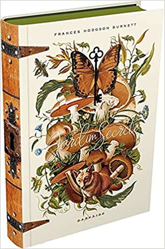

- 
O Jardim Secreto (ficção)
R$35,50
As histórias mais mágicas são capazes de atravessar as barreiras do tempo e encantar leitores de diferentes gerações. Em 1911, Frances Hodgson Burnett presenteou o mundo com O Jardim Secreto, uma história doce e delicada sobre o poder transformador da magia, da natureza e da amizade. Mais de cem anos depois, a DarkSide® Books encontrou a chave para o jardim e agora convida os leitores brasileiros a mergulharem neste emocionante clássico da literatura infantojuvenil. O Jardim Secreto conta a história de Mary Lennox, uma menina solitária que perde os pais em um surto de cólera na Índia e, como consequência, é enviada para uma mansão em Yorkshire para morar com seu tio misterioso. Cheia de incertezas diante da nova realidade cinzenta da Inglaterra, ela encontra consolo na natureza ao seu redor. E, quando descobre a existência de um jardim secreto nos terrenos da mansão e encontra a chave perdida, um mundo mágico se descortina diante de seus olhos. A menina e a natureza desabrocham juntas, em um percurso repleto de companheiros improváveis e amigos para vida inteira. Em uma de suas obras mais aclamadas, Frances Hodgson Burnett toca o coração dos leitores de todas as idades ao contar a história de Mary, uma menina rabugenta e desagradável; Dickon, um garoto doce e amigo dos animais; e Colin, um menino mimado e apavorado com a vida. E ela o faz com tanta maestria que o livro já ganhou inúmeras adaptações para o cinema e a tv, entre elas a versão da bbc, que estreou em janeiro de 1975, e o filme de 1993, dirigido por Agnieszka Holland e com Maggie Smith e Kate Maberly no elenco. Lírico e inesquecível, O Jardim Secreto é um livro que fascina crianças e adultos, inspirando a todos com sua receita secreta para vencer obstáculos, superar desafios e encontrar dentro de nossas essências um lugar onde a esperança sempre floresce. Fábulas Dark | Só os insetos sabem o caminho de casa A DarkSide® Books vai cair na toca do coelho, atravessar o túnel de árvores e redescobrir jardins secretos que ainda estão florescendo para uma nova geração de leitores. A marca Fábulas Dark vai trazer histórias surpreendentes que atravessaram gerações e se expandiram do mundo das palavras para todos os formatos e manifestações artísticas. Edições únicas e de puro encantamento. Viva a experiência dark no nosso mundo de fábulas.
Frankenstein: O clássico está vivo!
£49.99
Speaker
£199.99

Camera
£119.99